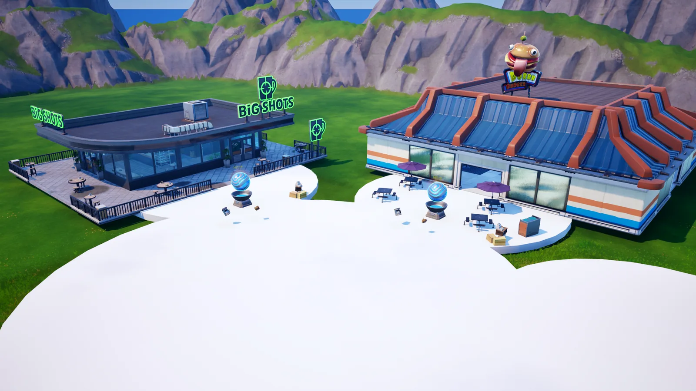
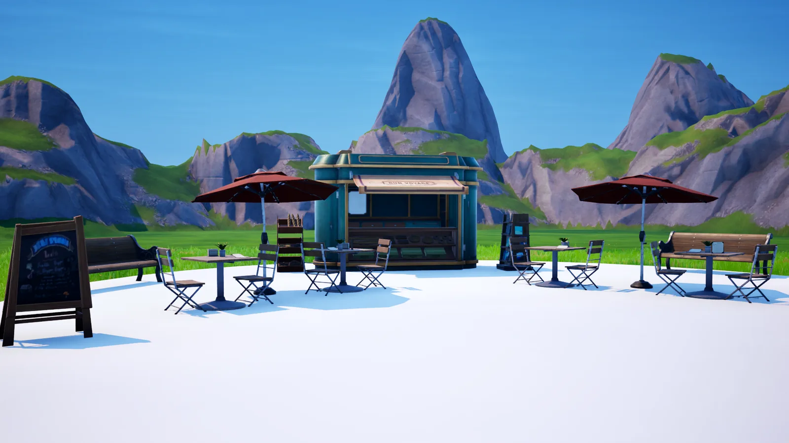
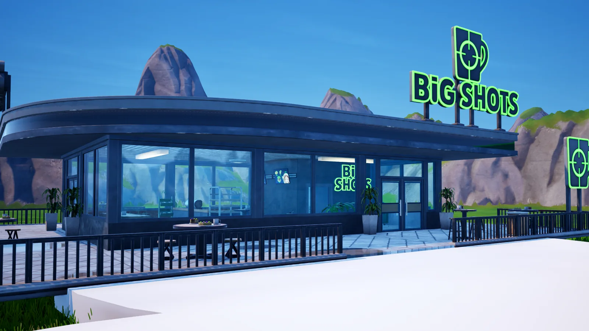

EconomiaConcluído
Mundo 01 · Em produção · UEFN
The Shopping District
Um bairro onde os atalhos para progredir não são vendidos pelo jogo. São vendidos pelos outros jogadores.
- Plataforma
- Fortnite / UEFN
- Fase
- Produção
- Tipo
- Tycoon social
Mundo 01 · Em produção · UEFN
Um bairro onde os atalhos para progredir não são vendidos pelo jogo. São vendidos pelos outros jogadores.

Escolha um tipo de negócio e trabalhe o seu lote. Cada melhoria muda fisicamente o que está de pé — o quiosque vira loja, a barraca vira salão. Para acelerar, compre vantagens de outros jogadores com Tickets, ganhos nos minijogos da ilha.
Sozinho, nada fica trancado. Os outros jogadores não destravam o jogo — levantam o teto dele.


Ciclo econômico completo testado em 4 de setembro de 2026, em UEFN 42.10, com jogadores simultâneos em dispositivos separados. Todo o protótipo foi escrito em Verse pela Terabyte, sem desenvolvimento terceirizado.
A Terabyte nasce da arquitetura, e aqui isso não é detalhe de apresentação. Linha de visada entre os lotes, distância a pé até uma loja, ler o nível de um negócio do centro da praça — são as decisões que determinam se a mecânica funciona.

O mapa está publicado em versão não listada, jogável por código, fora da vitrine do Fortnite. O acesso ao playtest é liberado pela Terabyte, sob pedido.
O projeto foi submetido ao Epic MegaGrants. O roadmap abaixo mostra o que já roda, o que vem em seguida e o critério que cada etapa precisa cumprir antes de a próxima começar.
A Etapa 2 é o plano de seis meses submetido ao Epic MegaGrants, dimensionado para uma janela financiada com três especialistas contratados. Sem esse financiamento, os marcos e os critérios de saída continuam os mesmos, com a capacidade atual e em um calendário mais longo.
Outro mundo
Multiverse Gun Game →O The Shopping District é o primeiro mundo da Terabyte, e a residência dele está aberta para um criador com comunidade própria, que ganha endereço fixo e identidade dentro do mundo. Criadores de UEFN que queiram ver o mapa por dentro também são bem-vindos: o acesso ao playtest é liberado sob pedido.